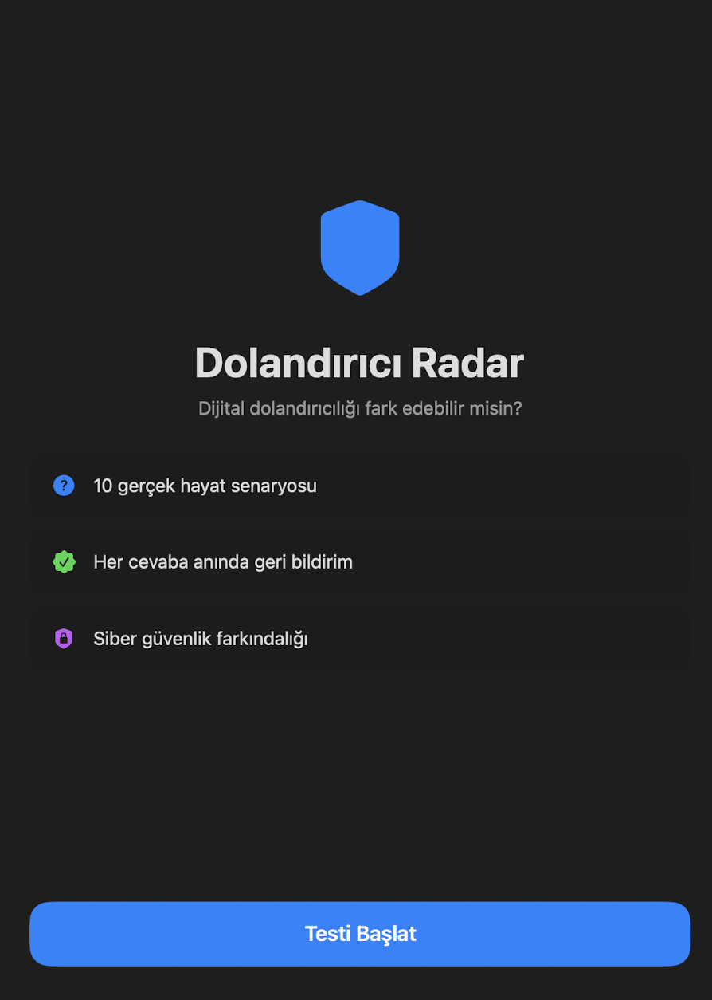
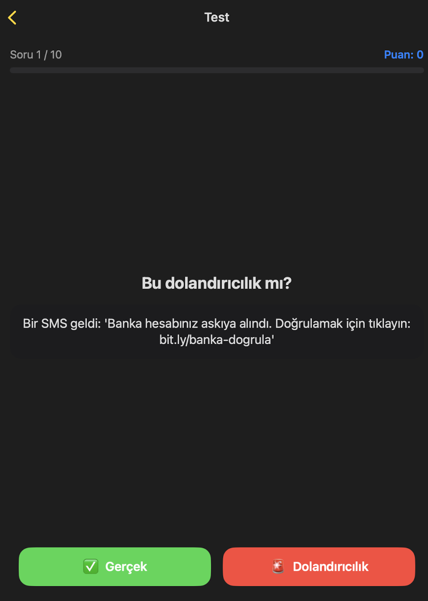
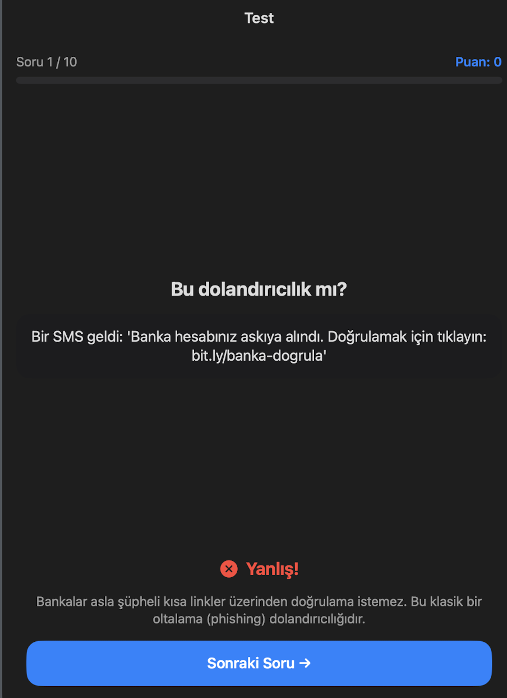
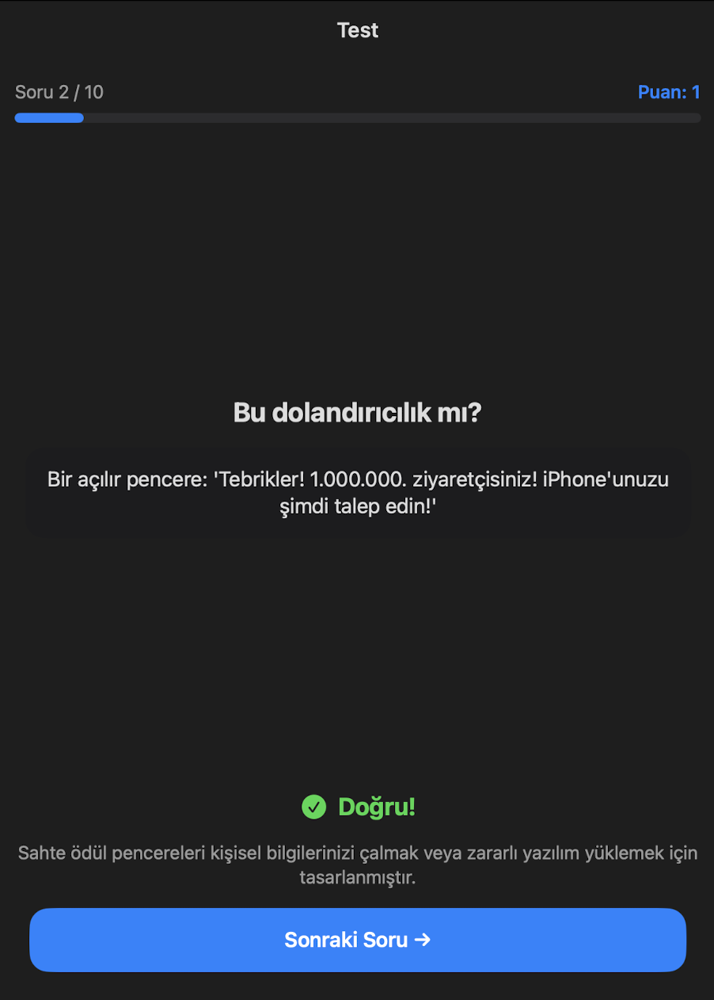
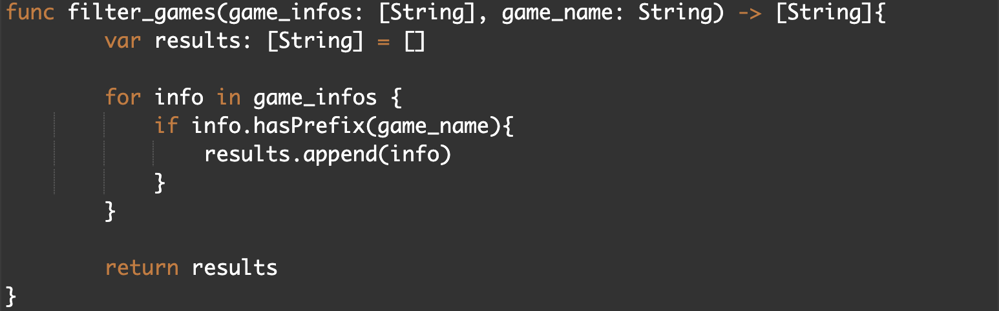
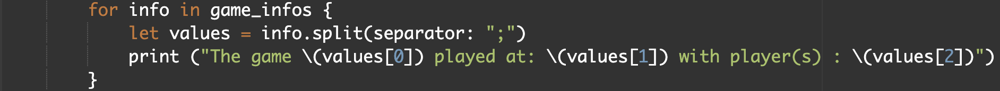

Scratch Tic-Tac-Toe
The Tic-Tac-Toe game that I built in Scratch.
10th grader at Hisar School, Istanbul. I build iOS apps, web projects, and document everything I make. Drawn to ideas with real impact — especially around cybersecurity and accessibility.
SwiftUI apps and coding experiments
The Tic-Tac-Toe game that I built in Scratch.
Two-player Tic-Tac-Toe with win detection, draw logic, and a restart button.
import SwiftUI
struct ContentView: View {
@State var player = "X"
@State var message1 = ""; @State var message2 = ""; @State var message3 = ""
@State var message4 = ""; @State var message5 = ""; @State var message6 = ""
@State var message7 = ""; @State var message8 = ""; @State var message9 = ""
@State var gameOver = false
@State var statusText = ""
var body: some View {
VStack(spacing: 20) {
Text(statusText.isEmpty ? "Sıra: \(player)" : statusText)
.font(.title3).padding(.top, 8)
HStack(spacing: 20) {
tileView(text: $message1); tileView(text: $message2); tileView(text: $message3)
}
HStack(spacing: 20) {
tileView(text: $message4); tileView(text: $message5); tileView(text: $message6)
}
HStack(spacing: 20) {
tileView(text: $message7); tileView(text: $message8); tileView(text: $message9)
}
Button("Restart") { resetBoard() }.padding(.top, 8)
}
}
func tileView(text: Binding<String>) -> some View {
ZStack {
Rectangle().fill(Color.blue).frame(width: 120, height: 120)
.onTapGesture {
if !gameOver, text.wrappedValue.isEmpty {
text.wrappedValue = player
checkWinner()
if !gameOver { player = (player == "X") ? "O" : "X" }
}
}
Text(text.wrappedValue).font(.title2).foregroundColor(.white)
}
}
func checkWinner() {
if message1 != "" && message1 == message2 && message2 == message3 { statusText = "\(message1) kazandı!"; gameOver = true }
else if message4 != "" && message4 == message5 && message5 == message6 { statusText = "\(message4) kazandı!"; gameOver = true }
else if message7 != "" && message7 == message8 && message8 == message9 { statusText = "\(message7) kazandı!"; gameOver = true }
else if message1 != "" && message1 == message4 && message4 == message7 { statusText = "\(message1) kazandı!"; gameOver = true }
else if message2 != "" && message2 == message5 && message5 == message8 { statusText = "\(message2) kazandı!"; gameOver = true }
else if message3 != "" && message3 == message6 && message6 == message9 { statusText = "\(message3) kazandı!"; gameOver = true }
else if message1 != "" && message1 == message5 && message5 == message9 { statusText = "\(message1) kazandı!"; gameOver = true }
else if message3 != "" && message3 == message5 && message5 == message7 { statusText = "\(message3) kazandı!"; gameOver = true }
else if [message1,message2,message3,message4,message5,message6,message7,message8,message9].allSatisfy({ !$0.isEmpty }) { statusText = "Berabere!"; gameOver = true }
}
func resetBoard() {
message1=""; message2=""; message3=""; message4=""; message5=""; message6=""
message7=""; message8=""; message9=""; player="X"; statusText=""; gameOver=false
}
}A simple calculator with +, -, ×, ÷ operations built in Swift.
import SwiftUI
struct ContentView: View {
@State var n1 = ""; @State var n2 = ""; @State var result = 0
var body: some View {
VStack(spacing: 12) {
Text("Simple Calculator").font(.title2)
TextField("Enter first number", text: $n1).textFieldStyle(.roundedBorder)
TextField("Enter second number", text: $n2).textFieldStyle(.roundedBorder)
HStack(spacing: 15) {
Button("+") { if let a = Int(n1), let b = Int(n2) { result = a + b } }
Button("-") { if let a = Int(n1), let b = Int(n2) { result = a - b } }
Button("*") { if let a = Int(n1), let b = Int(n2) { result = a * b } }
Button("/") { if let a = Int(n1), let b = Int(n2), b != 0 { result = a / b } }
}
.buttonStyle(.borderedProminent)
Text("Result: \(result)")
}
.padding()
}
}A simple portrait drawn entirely with SwiftUI shapes.
import SwiftUI
struct ContentView: View {
var body: some View {
ZStack {
Capsule().frame(width:170,height:250).foregroundStyle(Color.brown)
Capsule().frame(width:125,height:100).offset(y:-105).offset(x:-40).foregroundStyle(Color.yellow)
Capsule().frame(width:125,height:100).offset(y:-105).offset(x:40).foregroundStyle(Color.yellow)
Rectangle().frame(width:80,height:165).offset(y:175).foregroundStyle(Color.brown)
Rectangle().frame(width:300,height:250).offset(y:350).foregroundStyle(Color.white)
Capsule().frame(width:25,height:30).foregroundStyle(Color.cyan).offset(y:-25).offset(x:-39)
Capsule().frame(width:25,height:30).foregroundStyle(Color.cyan).offset(y:-25).offset(x:39)
}
}
}First version of my interactive SwiftUI clock — tap to advance time.
import SwiftUI
struct ContentView: View {
@State var hour = 13
@State var minuteSeg = 0
var hourAngle: Double {
let h = hour % 12
let base = Double(h) * 30
let step = Double(minuteSeg) * 7.5
return (h == 0 && minuteSeg == 0) ? 0 : base + step
}
var body: some View {
VStack(spacing: 16) {
Text("Time: \(hour)")
ZStack {
if hour < 12 {
Circle().fill(.yellow).opacity(0.8).overlay(Circle().stroke(.white,lineWidth:4)).frame(width:200,height:200)
} else {
Circle().fill(.blue).opacity(0.8).overlay(Circle().stroke(.white,lineWidth:4)).frame(width:200,height:200)
}
// minute hand + hour hand...
Rectangle().fill(.white).frame(width:8,height:40).offset(x:0,y:-25).rotationEffect(.degrees(hourAngle))
Circle().fill(.white).frame(width:10,height:10)
}
.onTapGesture {
minuteSeg += 1
if minuteSeg == 4 { minuteSeg = 0; hour += 1 }
if hour == 24 { hour = 0 }
}
}.padding()
}
}Added +/- hour buttons and a "Next Minute" button alongside tap gesture.
import SwiftUI
struct ContentView: View {
@State var hour = 0
@State var minuteSeg = 0
var hourAngle: Double {
let h = hour % 12
return (h == 0 && minuteSeg == 0) ? 0 : Double(h)*30 + Double(minuteSeg)*7.5
}
var body: some View {
ZStack {
(hour < 12 ? Color.white : Color.gray).ignoresSafeArea()
VStack(spacing: 16) {
Text("Time: \(hour)").foregroundColor(hour < 12 ? .black : .white)
// Clock face with ears, minute hand, hour hand...
HStack(spacing: 12) {
Button("- Hour") { hour = (hour+23)%24 }
Button("+ Hour") { hour = (hour+1)%24 }
Button("Next Minute") { minuteSeg = (minuteSeg+1)%4 }
}
}.padding()
}
}
}Mickey Mouse–themed clock with number ring, ears, eyes, and mode toggle.
Target audience: Children who love Mickey Mouse.
Most challenging: Debugging interactive state + number ring placement.
import SwiftUI
struct ContentView: View {
@State var hour = 0; @State var minuteSeg = 0
var hourAngle: Double {
let h = hour % 12
return (h==0 && minuteSeg==0) ? 0 : Double(h)*30 + Double(minuteSeg)*7.5
}
var body: some View {
ZStack {
(hour < 12 ? Color.white : Color.gray).ignoresSafeArea()
VStack(spacing:16) {
Text("Time: \(hour)").foregroundColor(hour < 12 ? .black : .white)
// Mickey ears (HStack of two Circles offset)
ZStack {
// clock face circle, eye ellipses, GeometryReader for number ring,
// minute hand rectangle, hour hand rectangle, center dot
}
.onTapGesture {
minuteSeg = (minuteSeg+1)%4
if minuteSeg == 0 { hour = (hour+1)%24 }
}
HStack(spacing:12) {
Button("- Hour") { hour = (hour+23)%24 }
Button("+ Hour") { hour = (hour+1)%24 }
Button("Next Minute") { minuteSeg = (minuteSeg+1)%4 }
Button("Random Hour") { hour = Int.random(in:0...23) }
}
}.padding()
}
}
}Count 0–15, display in decimal and binary with green/gray LED tiles.

import SwiftUI
struct ContentView: View {
@State var id = 0
let maxID = 15
private var bits: [String] {
Array(decimalToBinary(id)).map { String($0) }
}
func decimalToBinary(_ number: Int) -> String {
let powers = [8,4,2,1]; var n = number%16; var s = ""
for p in powers { if n >= p { s += "1"; n -= p } else { s += "0" } }
return s
}
var body: some View {
ZStack {
Color.black.ignoresSafeArea()
VStack(spacing:16) {
Text("4-Bit ID Counter").font(.title).foregroundColor(.white).bold()
HStack {
Text("Decimal: \(id)").foregroundColor(.white)
Text("Binary: \(decimalToBinary(id))").foregroundColor(.white)
}.font(.title3)
HStack(spacing:12) {
ForEach(0..<4, id:\.self) { i in
RoundedRectangle(cornerRadius:14)
.fill(bits[i]=="1" ? Color.green : Color.gray.opacity(0.6))
.frame(width:68,height:68)
.overlay(Text(bits[i]).font(.title).bold().foregroundColor(.white))
}
}
HStack(spacing:24) {
Button("Enroll (+1)") { id = id==maxID ? 0 : id+1 }
Button("Reset (0)") { id = 0 }
}
}.padding()
}
}
}Interactive ice cream cone with up to 5 colorful scoops.
import SwiftUI
struct Triangle: Shape {
func path(in rect: CGRect) -> Path {
var path = Path()
path.move(to: CGPoint(x:rect.midX, y:rect.maxY))
path.addLine(to: CGPoint(x:rect.minX, y:rect.minY))
path.addLine(to: CGPoint(x:rect.maxX, y:rect.minY))
path.closeSubpath(); return path
}
}
struct ContentView: View {
@State private var scoop1: Color? = nil
@State private var scoop2: Color? = nil
@State private var scoop3: Color? = nil
@State private var scoop4: Color? = nil
@State private var scoop5: Color? = nil
@State private var count = 0
func colorFor(_ i: Int) -> Color {
[Color.pink,.yellow,.mint,.purple,.blue][(i-1) % 5]
}
func add() {
if scoop1==nil { scoop1=colorFor(1); count=1 }
else if scoop2==nil { scoop2=colorFor(2); count=2 }
else if scoop3==nil { scoop3=colorFor(3); count=3 }
else if scoop4==nil { scoop4=colorFor(4); count=4 }
else if scoop5==nil { scoop5=colorFor(5); count=5 }
else { reset() }
}
func reset() { count=0; scoop1=nil; scoop2=nil; scoop3=nil; scoop4=nil; scoop5=nil }
// body: ZStack with Triangle (cone) + Circle scoops stacked by offset
}Move a player left/right before the timer hits zero while avoiding obstacles.


More Swift apps, simulations & design challenges
Console-style sim tracking candy stock, prices, and best sellers over 60 minutes.
import SwiftUI
struct ContentView: View {
@State private var report = ""
var body: some View {
ScrollView {
Text(report.isEmpty ? "Running..." : report)
.font(.system(.body, design:.monospaced)).padding()
}
.onAppear { report = simulate() }
}
func simulate() -> String {
var chocolateStock=12; var gummyStock=10; var lollipopStock=12; var caramelStock=8
var soldChocolate=0; var soldGummy=0; var soldLollipop=0; var soldCaramel=0; var cash=0
var lines: [String] = []
for minute in 1...60 {
if minute%2==0 && gummyStock>0 { gummyStock-=1; soldGummy+=1; cash+=2; lines.append("m\(minute): Gummy sold") }
if minute%3==0 && lollipopStock>0 { lollipopStock-=1; soldLollipop+=1; cash+=2; lines.append("m\(minute): Lollipop sold") }
if minute%5==0 {
if chocolateStock>0 { chocolateStock-=1; soldChocolate+=1; cash+=3; lines.append("m\(minute): Chocolate sold") }
else if caramelStock>0 { caramelStock-=1; soldCaramel+=1; cash+=3 }
}
if minute%20==0 { chocolateStock+=2; gummyStock+=2; lollipopStock+=2; caramelStock+=2 }
}
lines.append("FINAL: Cash=$\(cash) | Best: Gummy(\(soldGummy))")
return lines.joined(separator:"\n")
}
}Temperature simulation with auto-stop, status messages, and pseudocode.
import SwiftUI
func hotChocolateMachine() -> [String] {
let startTemp = 20; var currentTemp = startTemp; var out: [String] = []
for minute in 1...20 {
currentTemp += 5
out.append("Minute \(minute): \(currentTemp)°C")
if currentTemp < 50 { out.append("→ Still cold.") }
else if currentTemp <= 70 { out.append("→ Ready to serve!") }
else if currentTemp <= 80 { out.append("→ Too hot! Wait.") }
else { out.append("⚠ Auto-stop!"); break }
}
out.append("Total change: \(currentTemp-startTemp)°C")
return out
}Visual array map showing my favorite games at each index.
import SwiftUI
struct ContentView: View {
let games = ["League Of Legends","Fortnite","FC 26","Valorant"]
var body: some View {
VStack(spacing:20) {
Text("My Array Map V1 – Gaming").font(.title2).padding(.bottom,10)
ForEach(0..<games.count, id:\.self) { i in
RoundedRectangle(cornerRadius:12).stroke(Color.blue,lineWidth:2)
.frame(height:60)
.overlay(HStack { Text("Index \(i):").font(.headline); Text(games[i]).font(.headline).foregroundColor(.purple); Spacer() }.padding(.horizontal))
}
}.padding()
}
}A simple navigation list of world cities for a clock app skeleton.
Reflection: Used lists to organize information; realized loops are key for scaling up.
import SwiftUI
struct ContentView: View {
let cities = ["🇬🇧 London","🇹🇷 Istanbul","🇺🇸 New York","🇯🇵 Tokyo","🇫🇷 Paris","🇦🇺 Sydney"]
var body: some View {
NavigationView {
List(cities, id:\.self) { city in
Text(city).font(.title2).padding(.vertical,4)
}
.navigationTitle("World Clock V1")
}
}
}A SwiftUI list of ice cream flavors with matching background colors and a triangle cone.
First Figma design inspired by Nadin, a Hisar graduate. Goal: a STEM learning app for students.

Paint cells on a 10×10 grid by entering an index number (0–99).
A collection of AP CSP practice Swift Playgrounds projects.
Updated design with cleaner layout and new animations.

Robot navigates a 7×7 grid, avoids obstacles, and traces its path.

import SwiftUI
struct Position: Equatable { var x: Int; var y: Int }
struct ContentView: View {
let gridSize = 7
@State var robotX=0; @State var robotY=0; @State var path:[Position]=[]
let obstacles:[Position] = [Position(x:3,y:1),Position(x:2,y:4)]
@State var directions:[String]=[]; @State var steps:[Int]=[]
@State var message = "Tap Set Path then Run"
func move(direction:String,steps:Int) {
// moves robot step by step, stops at obstacles or grid edge
}
func filter_games(game_infos:[String],game_name:String)->[String] {
game_infos.filter { $0.hasPrefix(game_name) }
}
}Letters C and O drawn with a 10×10 dot grid — yellow and blue.
import SwiftUI
struct ContentView: View {
let gridSize=10; let dotSize:CGFloat=18; let gap:CGFloat=8
let cColor:Color = .yellow; let oColor:Color = .blue
var body: some View {
ZStack {
Color.black.ignoresSafeArea()
VStack(spacing:24) {
Text("My Initials with Code").font(.title2).bold().foregroundColor(.white)
HStack(spacing:48) { gridView(for:"C"); gridView(for:"O") }.padding()
}
}
}
func shouldDraw(letter:Character,row:Int,col:Int)->Bool {
switch letter {
case "C": return ((row==0||row==gridSize-1)&&(1...gridSize-2).contains(col))||(col==0&&(1...gridSize-2).contains(row))
case "O": return ((row==0||row==gridSize-1)&&(1...gridSize-2).contains(col))||((col==0||col==gridSize-1)&&(1...gridSize-2).contains(row))
default: return false
}
}
}Turkish-language RPS game against AI with win/lose/tie detection.
struct GameLogic {
let choices = ["✊","✋","✌️"]
enum Outcome {
case win, lose, tie
var text: String {
switch self { case .win: return "Kazandın!"; case .lose: return "Kaybettin!"; case .tie: return "Berabere!" }
}
}
func randomComputerChoice() -> String { choices.randomElement() ?? "✊" }
func determineWinner(userChoice:String,computerChoice:String)->Outcome {
if userChoice==computerChoice { return .tie }
if (userChoice=="✊"&&computerChoice=="✌️")||(userChoice=="✋"&&computerChoice=="✊")||(userChoice=="✌️"&&computerChoice=="✋") { return .win }
return .lose
}
}Binary search over a sorted integer database with step-by-step console output.
let database = [2,5,8,12,16,23,38,56,72,91]
let targetID = 23
var low=0; var high=database.count-1; var steps=0; var foundIndex:Int?=nil
while low <= high && foundIndex==nil {
let mid = (low+high)/2; steps+=1
print("> Step \(steps): Checking [\(mid)] -> \(database[mid])")
if database[mid]==targetID { foundIndex=mid }
else if database[mid] < targetID { low=mid+1 }
else { high=mid-1 }
}
if let idx=foundIndex { print("> SUCCESS at Index \(idx) in \(steps) steps.") }AP CSP Final Project — Dolandırıcı Radar & Component C Reference
An iOS quiz app that teaches users to spot digital scams. Players are shown 10 real-life scenarios — SMS messages, pop-ups, emails — and decide if each one is real or fraud. After every answer they get instant educational feedback explaining the red flags.
Technical Requirements Covered
App Screenshots




↑ Upload the 4 screenshots from the submission to images/ with these names.
Full project submission for Beyza Nalbantoğlu's AP CS P 2025–2026 class. An iOS mobile application connected to the TÜBİTAK 2204-A Cybersecurity thematic area.
The filter_games function is my named procedure with a parameter. It takes a list of game info strings and a game name, then returns only the matching entries.
Procedure Definition (i)

Call Site (ii)
func filter_games(game_infos: [String], game_name: String) -> [String] {
var results: [String] = []
for info in game_infos {
if info.hasPrefix(game_name) {
results.append(info)
}
}
return results
}
// Call site:
let results = filter_games(
game_infos: game_infos,
game_name: game_types[num]
)
game_infos is my list (array). It stores game records as
semicolon-separated strings: name;date;players.
Declaration (i-a)
Append to List (i-b)
Iterate & Display (ii)

// Declaration
var game_infos: [String] = []
// Adding a record
game_infos.append(
game_types[num] + ";" + date + ";" + player_list
)
// Iterating and printing
for info in game_infos {
let values = info.split(separator: ";")
print("The game \(values[0]) played at: \(values[1]) with player(s): \(values[2])")
}Short demo video covering purpose, main features, and technologies of the Dolandırıcı Radar app.
↑ Upload CSP_Portfolio_Video.mov to assets/ folder.
AP CSP — 5 Big Ideas, key concepts & reflections
In this unit I learned how to turn an idea into a working program by planning, testing, presenting, and explaining my design. I documented everything with notes and screenshots, and made a short narration to show how the program works and why I built it.
Good programs are rarely built alone. Collaboration means sharing tasks, reviewing each other's code, and combining different perspectives to produce better results. I worked with classmates on the Tic-Tac-Toe project — we split debugging tasks and caught errors faster together than I would have alone.
Before writing code, a good developer thinks about the structure: what inputs go in, what outputs come out, and what steps happen in between. I used pseudocode and sketches before writing any Swift.
Every program should have a clear reason for existing. I defined the goal and audience for each project before I started building, which helped me make better design decisions.
Bugs are unavoidable. The skill is in finding and fixing them systematically. I learned to use print statements, test edge cases, and isolate problems by commenting out sections of code.
In this unit I learned how to transform raw data into meaningful information. I practiced reading metadata, cleaning messy datasets, recognizing patterns, and understanding the limits and biases that come with data collection.
Computers store everything — text, images, sound — as binary (0s and 1s). Understanding this helps you understand why file sizes, color limits, and precision trade-offs exist.
Compression reduces file size to save storage and speed up transmission. There are two types: lossless (no data lost) and lossy (some data is permanently removed).
Raw data doesn't tell you much on its own. You need to organize, filter, and visualize it to find patterns and draw conclusions.
Programs can process large datasets far faster than any human. But they can only be as good as the data they're given — bad data in, bad results out.
This is the largest Big Idea. It covers the core building blocks of programming: variables, conditions, loops, lists, functions, and algorithms. Most of my Swift projects are direct applications of these concepts.
Variables store data that can change during a program's run. In Swift I used @State for variables that should trigger a UI refresh when they change.
var time = 20 and var playerX: CGFloat = 0 track the game state in real time.Instead of tracking individual items separately, lists let you group related data and handle it with loops. This is what makes programs scalable.
var game_infos: [String] = [] — one list holds all game records. Without it, I'd need a separate variable for every game.Conditionals let programs make decisions. They evaluate a boolean expression (true/false) and branch into different paths accordingly.
if / else if / else chains control which code runs. Nested conditionals allow more complex logic.&&), OR (||), NOT (!) let you combine conditions.determineWinner function is a clean example of boolean logic — 3 win conditions checked with OR.Loops repeat a block of code without you having to write it out multiple times. They're what make processing lists possible.
for loops iterate a known number of times. while loops run until a condition becomes false.while low <= high loop — it keeps halving the search range until the target is found or the range is empty.for minute in 1...60 loop — simulating 60 minutes of sales in milliseconds.Procedures (functions) group reusable code under a name. You define it once, then call it whenever you need it — with different inputs each time.
filter_games(game_infos:, game_name:) is a procedure that takes a list and a name, and returns a filtered list. It can be reused for any game type without rewriting the logic.Not all algorithms that solve the same problem are equally good. Efficiency matters — especially with large datasets.
Simulations model real-world processes in code so we can study them without real-world cost or risk.
This unit is about how computers are connected and how the internet actually works — from physical hardware to the protocols that let a message travel from Istanbul to Tokyo in milliseconds.
The internet is a global network of interconnected devices. It was designed to be decentralized — no single point of failure can take the whole thing down.
canortn.github.io) into IP addresses that computers use.The internet was designed by ARPA to survive partial failures — even nuclear strikes. This is achieved through redundancy: multiple paths between any two points.
Some problems are too big or too slow for a single processor. Parallel computing splits a task across multiple processors; distributed computing splits it across multiple machines entirely.
Technology doesn't just solve problems — it creates new ones. This unit asks the harder questions: who benefits, who gets left behind, and what responsibilities come with building software.
Almost every technology has both positive and negative impacts. The same tool that connects people can also spread misinformation.
Not everyone has equal access to technology. The "digital divide" refers to the gap between those who have reliable internet and devices, and those who don't.
Algorithms reflect the data and decisions of the people who built them. If that data or those decisions contain bias, the algorithm will too — often invisibly.
Crowdsourcing uses the collective effort of many people — often online — to complete tasks, gather data, or fund projects.
Technology moves faster than the laws designed to govern it. This creates gray areas around privacy, intellectual property, and responsibility.
Users and developers both have a responsibility to make computing safer. This means strong passwords, encrypted connections, careful data handling, and awareness of social engineering.
How things were built and what I learned
Single-page site using vanilla HTML, CSS, and JavaScript for hash-based routing. GitHub Pages auto-deploys on every commit. I got help from Beyza Hoca's videos and ChatGPT study mode. I added MP4 videos, collapsible code blocks, and a project index.
Thanks to Ömer H., Mehmet B., and Çağan K. for the help.
Purpose: Practice SwiftUI state, view composition, and game logic.
Input / Output: Tile taps → board update + status text (turn / win / draw).
Design: Each tile stores its own value. checkWinner() checks all 8 lines. resetBoard() clears state.
Built with: ChatGPT study mode + Çağan K. and Eren H.
Nine tiles toggle X/O; win sprites check rows/columns/diagonals and highlight the winning line.
Next steps: Fix edge-case bugs, add counters, player-vs-CPU mode, sound effects.
Big Idea 1 combines: Collaboration, Program Design & Development, Program Function & Purpose, and Identifying & Correcting Errors. Summarized using Beyza Teacher's presentations and my own notes.
Vigenère Cipher code and activity sheet with both questions and an answer key.
func vigenereEncrypt(text:String, key:String) -> String {
let alphabet = Array("ABCDEFGHIJKLMNOPQRSTUVWXYZ")
var result = ""
let keyArray = Array(key.uppercased())
if keyArray.isEmpty { return text }
var keyIndex = 0
for char in text.uppercased() {
if let ti=alphabet.firstIndex(of:char), let shift=alphabet.firstIndex(of:keyArray[keyIndex]) {
result.append(alphabet[(ti+shift)%26])
keyIndex = (keyIndex+1)%keyArray.count
} else { result.append(char) }
}
return result
}